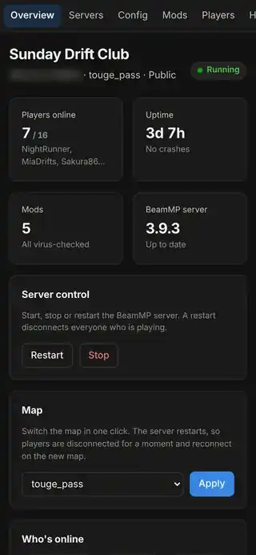

Indíts BeamMP szervert a barátaidnak, konfigurációs fájl nélkül
Az EasyServer feltelepíti a hivatalos BeamMP szervert, és ad egy oldalt, ahonnan irányíthatod. Ingyenes, nyílt forráskódú, és Windowson és Linuxon is megy.


Elérhetővé tételEnnél a résznél akad el a legtöbb ember.
Vezetett telepítés
Illeszd be az AuthKeyt, és a telepítő ellenőrzi, hogy érvényes-e. Beállítja, hogy a szerver a géppel együtt induljon, és összeomlás után újraindítja.
A port megnyitása
Egy kattintás megkéri a routert, hogy nyissa meg a 30814-es portot. Ha a routered ezt nem engedi, a Súgó oldal elmagyarázza, hogyan csináld kézzel.
„Miért nem tud csatlakozni a barátom?”
Az Állapot oldal ellenőrzi az AuthKeyt, a portot, a tűzfalat, és hogy fent van-e a szervered a BeamMP listán, és megmondja, melyik a rossz.
Régi laptopok is jók
A Gyenge gép előbeállítás kevesebb játékost és autót enged, és gyorsan eltakarítja az elhagyott autókat, így egy régi laptop is elvisz egy kis szervert.
ÜzemeltetésAz asztal mellől vagy a kanapéról.


Indítás, leállítás, pályaváltás
Listából válthatsz pályát a ServerConfig.toml szerkesztése helyett. Bármilyen böngészőben működik, telefonon is.
Játékosok és kitiltások
Kirúgás, némítás és kitiltás a vezérlőpultból, Discordból vagy chatparanccsal. Van meghívólista és karbantartási mód is.
Modok
Húzz egy zipet az oldalra, vagy válassz egyet a BeamNG tárolóból. Mindegyiket átnézi a vírusellenőrző, mielőtt a játékosok letöltenék.
Oszd meg az egész modlistádat egy rövid kóddal, és egy barátod szervere ugyanazokat telepítheti.
Mentések és értesítések
Mentsd és állítsd vissza a konfigurációt. Kapj üzenetet Discordon, e-mailben, Telegramon vagy telefonon, ha a szerver összeomlik.
Az 1.15 újdonságaiMár a Rollingban. Tesztelés után kerülnek a Stable-be.
Járműszabályok
Tilts le kellékeket, utánfutókat vagy bármilyen autót, és állítsd le a spawnspamet. A mindenkit lagoltató nehéz mod autókat magától kiszúrja.
Szerverpluginek
Telepíts közösségi játékmódokat, például CareerMP-t, freeRoamMP-t és BeamJoyt, egyenesen a szerzőjük oldaláról.
Csapatban üzemeltetve
Hívd meg a barátaidat egy linkkel, ami egyszer működik és egy óra múlva lejár, és döntsd el, ki mit csinálhat az egyes szervereken. Discorddal is beléphetnek.